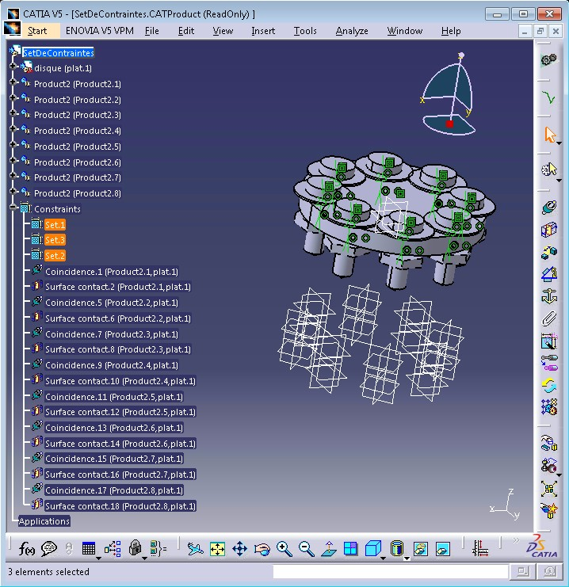
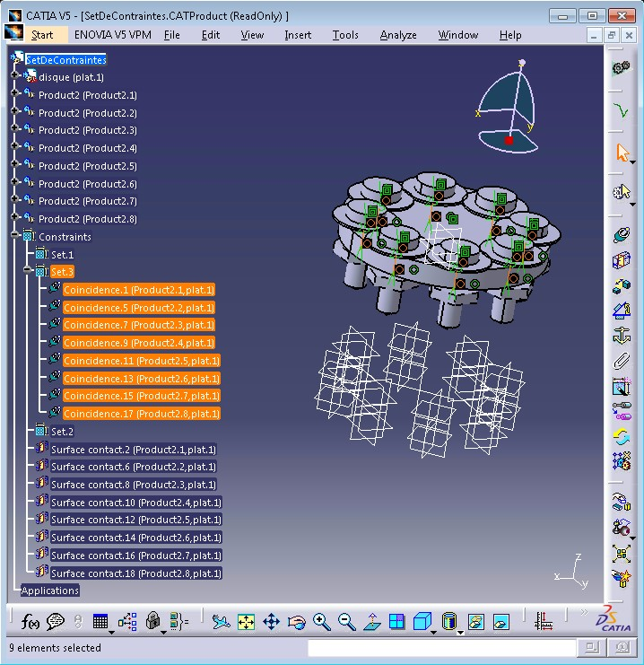
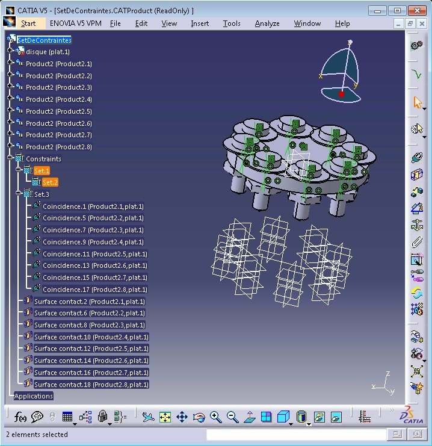
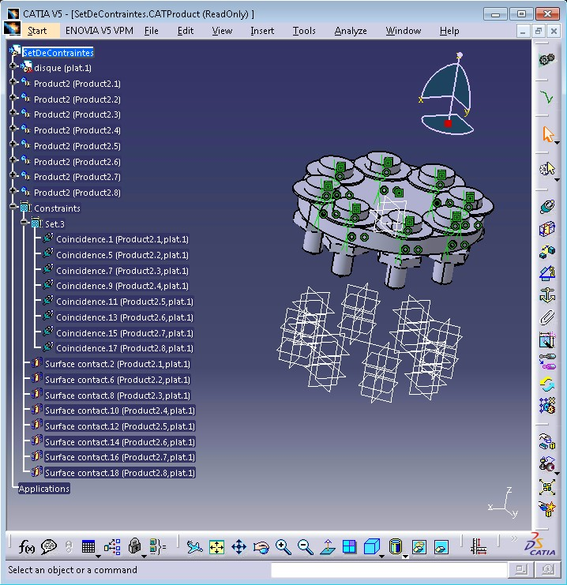
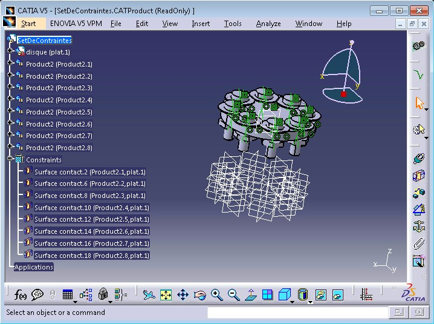

Mechanical Design |
Assembly Design |
Creating Sets of Constraints in an AssemblyCreate a set and group constraints under it |
| Use Case | ||
AbstractThis article discusses the CAAAsmCstSet use case. This use case explains how to create sets of constraints. |
This use case is intended to help you make your first steps in programming with CATIA Assembly Design. Its main intent is to create and manage sets of constraints. More specifically, you will learn how to:
[Top]
CAAAsmCstSet is a use case of the CAAAssemblyUI.edu framework that illustrates the CATAssemblyInterfaces framework capabilities.
Before discussing the use case, some main concepts have to be introduced:
A product can contain many constraints defined between its components
Constraints can be classified or grouped in specification tree as per requirement.
Constraint status is not taken in to account while grouping: deactivated and even broken constraints can be grouped.
[Top]
CAAAsmCstSet does the following:
[Top]
To launch CAAAsmCstSet, you will need to set up the build time environment, then compile CAAAsmCstSet along with its prerequisites, set up the run time environment, and then execute the use case [1].
Launch the use case as follows:
e:>CAAAsmCstSet InputDirectory\SetDeContraintes.CATProduct |
$ CAAAsmCstSet InputDirectory/SetDeContraintes.CATProduct |
where:
InputDirectory: |
The directory into which the document SetDeContraintes.CATProduct is stored, usually in the resources directory of your RuntimeView |
[Top]
The CAAAsmCstSet use case is located in the CAAAsmCstSet.m module of the CAAAssemblyUI.edu framework:
| Windows | InstallRootDirectory\CAAAssemblyUI.edu\CAAAsmCstSet.m\ |
| Unix | InstallRootDirectory/CAAAssemblyUI.edu/CAAAsmCstSet.m/ |
where InstallRootDirectory is the directory where the CAA CD-ROM
is installed.
[Top]
There are eight main steps in CAAAsmCstSet:
We will now comment each of those sections by looking the code.
[Top]
CAAAsmCstSet begins by checking that the command lines contains one argument with the command name "CAAAsmCstSet". Then it creates a session, and load the document which name is this argument. If the document does not exist a code 11 is returned.
Then CAAAsmCstSet retrieves the document's root product, handled by the pointer spRootProduct which is a pointer to CATIProduct interface. This is the usual sequence to browse a product structure [3] and find the root product pointer to CATIProduct, from the document whose name is the argument SetDeContraintes.CATProduct above.
spRootProduct |
A pointer to CATIProduct onto the root product of the document |
[Top]
...
int Created = 0;
CATIAsmCstSetFeature_var rootSet;
HRESULT hr_root = CATAsmConstraintSetServices::GetRootSet( spRootProduct, rootSet, TRUE );
if ( SUCCEEDED( hr_root ) && NULL_var != rootSet)
{
CATIAsmCstSetFeature_var iPreviousSet ;
CATIAsmCstSetFeature_var newSet1;
CATIAsmCstSetFeature_var newSet2;
CATIAsmCstSetFeature_var newSet3;
HRESULT rc1 = CATAsmConstraintSetServices::AddNewSetChild(rootSet,newSet1,iPreviousSet);
HRESULT rc2 = CATAsmConstraintSetServices::AddNewSetChild(rootSet,newSet2,iPreviousSet);
iPreviousSet = newSet1;
HRESULT rc3 = CATAsmConstraintSetServices::AddNewSetChild(rootSet,newSet3,iPreviousSet);
if( SUCCEEDED(rc1) && SUCCEEDED(rc2) && SUCCEEDED(rc3) && NULL_var != newSet1 && NULL_var != newSet2 && NULL_var != newSet3 )
{
Created = 1;
}
}
// Created set to one means that a root set and three child sets are created.
...
|
|
 |
[Top]
...
CATLISTV(CATBaseUnknown_var) cstChildrenList;
rc = rootSet->ListCstChildren(cstChildrenList);
...
|
[Top]
...
CATListValCATISpecObject_var listFromSet;
CATLISTV(CATBaseUnknown_var) cstToGroup;
for( int idxCst=1; idxCst <= cstChildrenList.Size(); idxCst++)
{
CATIAlias_var alias( cstChildrenList[idxCst] );
if( NULL_var != alias )
{
CATUnicodeString cstName = alias->GetAlias();
if( cstName.SearchSubString("Coincidence") > 0 )
{
cstToGroup.Append( cstChildrenList[idxCst] );
listFromSet.Append( rootSet );
}
}
}
HRESULT rc2 = newSet3->MoveConstraintsFrom(listFromSet, cstToGroup);
// If rc2 succeeds, constraints are moved to 3rd set.
...
|
|
 |
[Top]
...
rc = newSet1->MoveSetFrom(rootSet, newSet2 , NULL_var);
// If rc succeeds, 2nd set is moved under 1st set.
...
|
|
 |
[Top]
...
LifeCycleObject_var lco_set(newSet1);
if (NULL_var != lco_set)
{
lco_set->remove();
lco_set = NULL_var;
}
...
|
|
 |
[Top]
...
CATIAsmCstSetFeature_var fatherSet;
if( SUCCEEDED( newSet3->GetFatherSet( fatherSet ) ) && NULL_var != fatherSet )
{
rc = fatherSet->RemoveSetChild( newSet3 );
// If rc succeeds, 3rd set is removed.
}
...
|
|
 |
[Top]
The document is removed and the session is closed
...
CATDocumentServices::Remove(*pProductDocument);
Delete_Session("Session_ASSEMBLY");
...
|
This use case has demonstrated the way to group constraints under sets by using the interface CATIAsmCstSetFeature
[Top]
| [1] | Building and Launching a CAA V5 Use Case |
| [2] | Browsing a Product Structure |
| [Top] | |
| Version: 1 [July 2015] | Document created |
| [Top] | |
Copyright © 2015, Dassault Systèmes. All rights reserved.